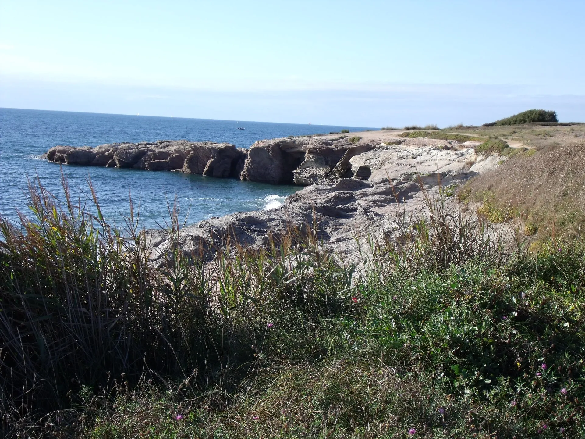

La Sauzaie — Brétignolles-sur-Mer
Vendée, France · surf

Reef de la côte vendéenne, au nord de la Corniche, à Brétignolles-sur-Mer. Selon plages.tv, une houle moyenne d’ouest avec un vent d’est donne le meilleur pic, à gauche et à droite, avec des sections creuses. Le Vendée Surf Pro s’y déroule.
- Lieu
- Vendée, France
- Niveau
- Expert
- Activités
- surf
- Type d'eau
- Mer / océan
- Coordonnées
- 46.65, -1.90 (position approximative du secteur)
Dangers à connaître
- Mise à l’eau parmi les rochers, tout près des vagues.
- Vagues creuses sur un reef : réservé aux surfeurs confirmés.
- Plage surveillée en juillet et août seulement.
Le conseil d'Ocean Buddy
Observe la mise à l’eau depuis la plage, entre seulement si tu sais gérer un reef et des rochers, et ne surfe pas seul.
Ouvrir dans Ocean Buddy Télécharger sur l'App Store
Source : Fiche Ocean Buddy · octobre 2026 · d’après plages.tv et l’Office de tourisme Pays de Saint-Gilles · à vérifier localement.